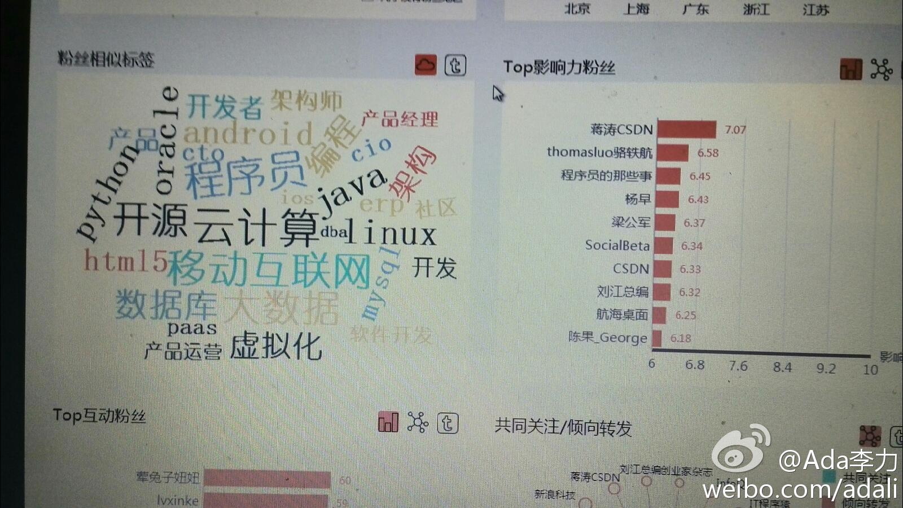
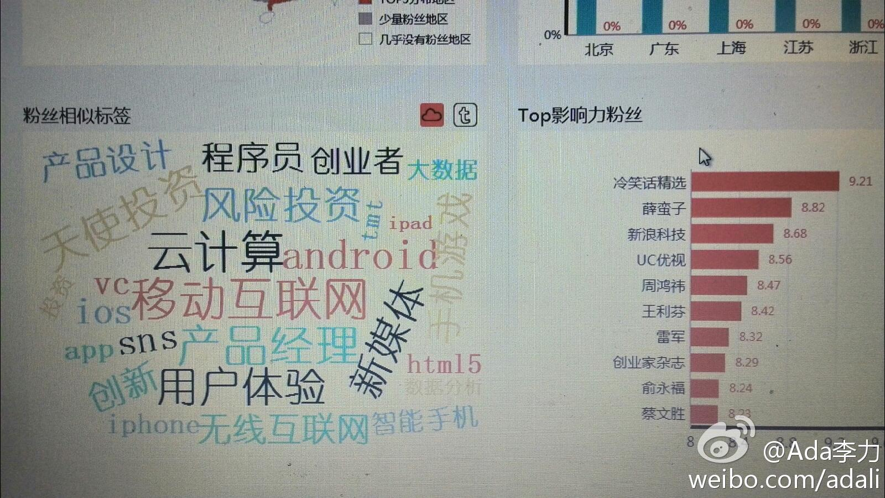

我对技术人员说，这些标签对我来说太老了，不反应现在的状态。他说反映的是别人对你的印象，新的印象建立需要时间。确实如此，现在Linkedin上还有人在推荐我的Java Development的技能，那至少是五年前的旧事儿了。@Ada李力:今天试了下时趣的社会化影响力产品，是weibo微数据上的又一层提炼，有些遗憾自己的标签还是在IT领域，而希望看到的#社区运营#，#创业#还没踪影。也用了@蒋涛CSDN 的帐号看了看分析，右图。 